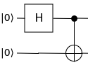
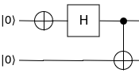
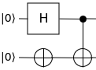
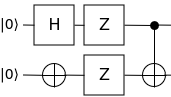

Quickstart
To learn how to use the SDK, let’s run a simple Python example to create a Bell state.
The Bell state is the simplest example of a maximally entangled state, and comprises just 2 qubits. These 2 qubits contribute a Hilbert space of dimension 4. In the qubit basis \(\ket{0}\) and \(\ket{1}\), these four components are written as
A Bell state can be constructed through the application of simple gates such as the Hadamard, X, Z and CNOT gates. Each of the above components are created through their respective circuit:
Circuit to create \(\ket{\Phi^+}\): 
Circuit to create \(\ket{\Phi^-}\): 
Circuit to create \(\ket{\Psi^+}\): 
Circuit to create \(\ket{\Psi^-}\): 
Now let’s code up the circuit to generate \(\ket{\Phi^+}\).
Call the QB SDK core:
import qb.core
Create a quantum computing session using the QB SDK:
my_sim = qb.core.session()
Choose some default session parameters:
my_sim.qb12()
Set the number of shots to run through the circuit:
my_sim.sn = 1024
Set the number of qubits:
my_sim.qn = 2
Choose the simulator backend:
my_sim.acc = "qpp"
Create the \(\ket{\Phi^+}\) component of the Bell state using Hadamard and CNOT gates:
my_sim.instring = '''
__qpu__ void MY_QUANTUM_CIRCUIT(qreg q)
{
OPENQASM 2.0;
include "qelib1.inc";
creg c[2];
h q[0];
cx q[0], q[1];
measure q[0] -> c[0];
measure q[1] -> c[1];
}
'''
Run the circuit:
my_sim.run()
Print the cumulative results in each of the classical registers:
print(my_sim.out_raw[0][0])